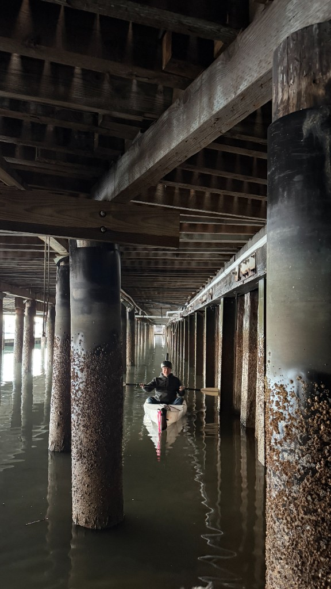
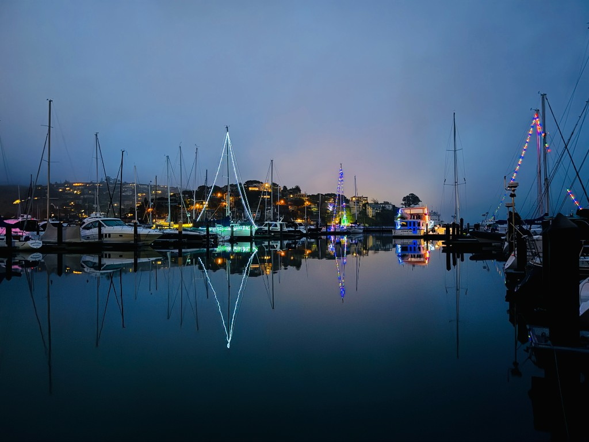
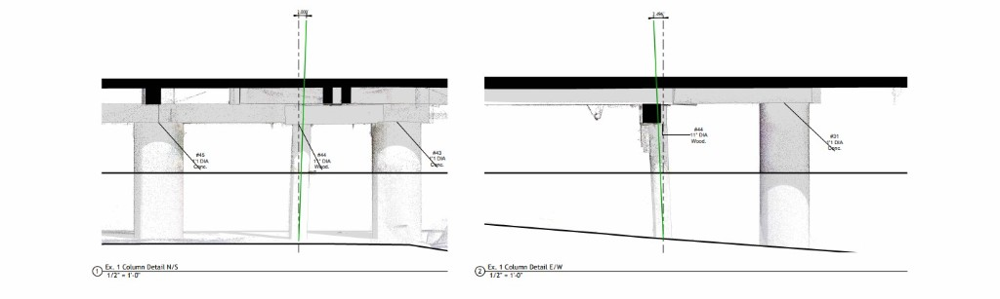

Salt Water, Rising Tides and Planning for Sea Level Change
Founded in 1869, the San Francisco Yacht Club is the oldest club on the West Coast. Like all coastal facilities the club and especially its docks and piers are subject to challenging conditions and like all older facilities, has evolved through constant repairs, renovations and expansion. As a result few of the 100s of pilings sunk deep into the San Francisco Bay floor are plumb and level, some are wooden poles, some concrete and all are different.

To capture the current state of the pilings we created a custom platform that strapped to the columns using web straps and clamps with a mechanism that allowed us to level the scanning surface.

At very low tides we could access some of the pilings by walking along the muddy, exposed “beach” but reaching most of them required paddling a kayak and carefully attaching, scanning and detaching the custom platforms, all while trying to make sure that no salt water or mud touched the (very expensive) scanner.
Fortunately we had a stretch of sunny weather in December and January. Rain and wind would have made an already challenging project much more difficult.

The resulting scans captured the pilings, the dock surfaces and the facades of the club buildings and provided an accurate model of the surface of the parking lot and surrounding site. We used the scans to generate a grid for the columns allowing easy identification and labeling for repair planning and execution.

By cropping the scan and the model we built from the scan we were able to zoom in to individual pilings to measure and communicate the degree of tilt.

Recreational facilities documentation
Once the project was completed we were able to adjust the sea level in the model to simulate water encroachment potential. Since the model was georeferenced and the site topography is modeled to accurately map to the scan data, it is easy to visualize how the site would be affected by rising sea levels and storm surges.